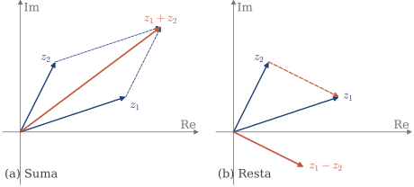
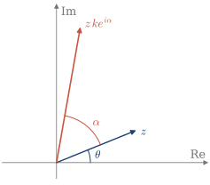
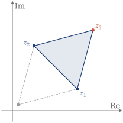

1.4 Transformaciones geométricas
Cada operación tiene una lectura geométrica en el plano complejo, si se ve cada número como un vector que va del origen a su afijo.
Interpretación geométrica de la suma y la resta
Con z_1=3+i y z_2=1+2i (Figura 1.6):
- La suma, z_1+z_2=4+3i, es la diagonal del paralelogramo que forman los dos vectores.
- La resta, z_1-z_2=2-i, es el vector que va del afijo de z_2 al de z_1, trasladado al origen.

Figura 1.6. (a) Suma de dos números complejos. (b) Resta: z_1-z_2 es el vector de z_2 a z_1.
Recuerda
z_1+z_2\ \ \text{diagonal del paralelogramo}, \qquad z_1-z_2\ \ \text{vector de $z_2$ a $z_1$}.
Interpretación geométrica del producto
Al multiplicar, los módulos se multiplican y las fases se suman. Por tanto, multiplicar z=\rho e^{i\theta} por ke^{i\alpha}, con k>0, hace dos cosas (Figura 1.7):
- un escalado: el módulo pasa de \rho a k\rho;
- una rotación: la fase pasa de \theta a \theta+\alpha.
Por ejemplo, como i=e^{i\pi/2}, multiplicar por i gira 90^\circ: (1+i)\,i=-1+i. Multiplicar por 2i gira 90^\circ y duplica el módulo.

Figura 1.7. Multiplicar por ke^{i\alpha} escala por k y gira un ángulo \alpha.
Para girar alrededor de otro punto w, se aplica lo mismo al vector z-w, que sale de w.
Recuerda
\rho e^{i\theta}\cdot ke^{i\alpha}=k\rho\,e^{i(\theta+\alpha)}, \qquad z'-w=(z-w)\,k\,e^{i\alpha}.
Ejemplo 1.11
Los afijos de z_1=3+i y z_2=1+3i son vértices de un triángulo equilátero. Hallar el otro vértice, sabiendo que es el de mayor parte imaginaria.
El lado de z_1 a z_2 es el vector z_2-z_1=-2+2i. En un triángulo equilátero, el otro lado que sale de z_1 tiene la misma longitud y forma con él un ángulo de \pi/3. Hay dos giros posibles: z_3-z_1=(z_2-z_1)\,e^{\mp i\pi/3}=(-2+2i)\left(\frac12\mp i\frac{\sqrt3}{2}\right). Con e^{-i\pi/3} sale z_3=(2+\sqrt3)(1+i), y con e^{i\pi/3} sale (2-\sqrt3)(1+i). El de mayor parte imaginaria es el primero (Figura 1.8): z_3=(2+\sqrt3)+i(2+\sqrt3). Comprobación: z_3-z_1=(\sqrt3-1)+i(\sqrt3+1) tiene módulo \sqrt8, igual que |z_2-z_1|.

Figura 1.8. El triángulo del ejemplo. En gris, la otra solución.
Con los contenidos de esta sección puedes hacer los ejercicios 1.19–1.25.